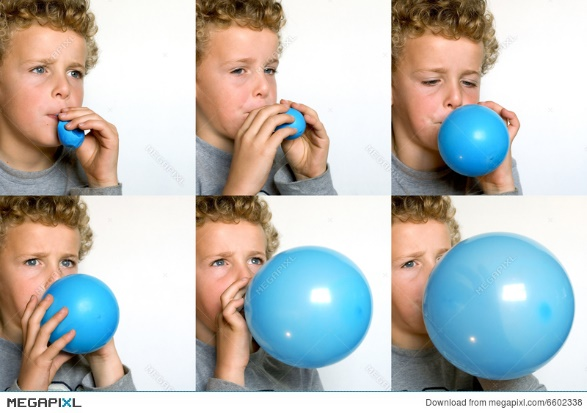

- Factors Affecting Ventilation
- 1. Compliance – distensibility (stretchability)
- Change in lung vol per change in transpulmonary P
- 100 x more distensible than a balloon
- Compliance is affected by elastance (2) ; and surface tension (3)
- 2. Elastance (elasticity) – recoil ability, resistance to distension
- Elasticity = 1/compliance
- Tendency to return to initial size after distension.
- High content of elastin proteins
- Elastic tension during inspiration and during expiration
- Balloon analogy
- Diseases can alter compliance and elasticity (ahead).
- https://www.youtube.com/watch?v=v7477AMrUyc
- 3. Surface tension – to be discussed in the next slides
